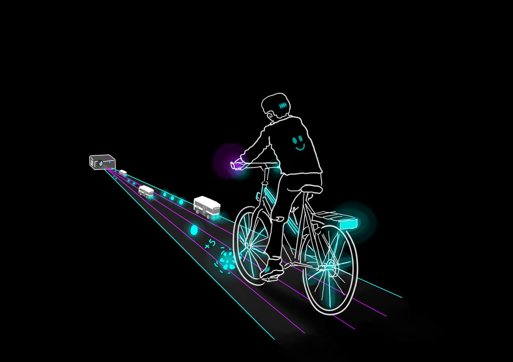

Eine interaktive Lichtinstallation auf dem Nextbike

Fahrradfahren bereitet Freude, ist im Alltag jedoch auch mit Herausforderungen verbunden. Um diese Erfahrung den Besucherinnen und Besuchern des LiLu auf spielerische Weise zu vermitteln, schlagen wir auf dem Inseli eine interaktive Fahrrad-Installation vor. Die Installation soll einerseits für das Fahrrad und seine gesundheitlichen Vorteile sensibilisieren, andererseits durch die erzeugte Illusion von Geschwindigkeit überraschen und unterhalten.
Für Gesundheit und Umwelt. Für eine Velostadt Luzern.
Hardware Prototyp
Über uns
Aurel, Céline und Jonas sind in Luzern aufgewachsen, in Ihrem Alltag haben sie es oft mit Planung und Ausarbeitung von technischen Projekten zu tun. Jonas arbeitet in einem Architekturbüro in Zürich, Aurel bei der ABB in der Innovationsabteilung, Celine als Lichtplanerin. Nebenberuflich ist Aurel als Lichttechniker und Musiker in Luzern engagiert.
Spiele die Demo im Browser
Dies ist eine frühe Demo-Version des Spiels welche das Konzept zeigt. Bei erfolgreicher Projekteingabe wird das Spiel noch weiter ausgearbeitet. In dieser Web-Demo, benutze entweder den Touchscreen oder die Pfeiltasten auf deinem Keyboard um das "Fahrrad" an den Hindernissen vorbei zu steuern.
Click the game to focus · LEFT / RIGHT arrow keys to steer · avoid obstacles · collect coins · SPACE to restart